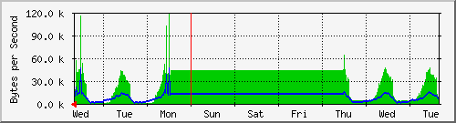
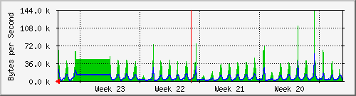
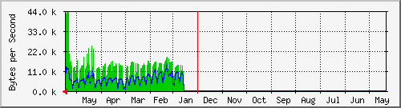

PERISUR-REGISTRO CIVIL
| System:MRTG | Core Perisur |
| Maintainer:dangelesc@finanzas.cdmx.gob.mx | |
| Description: | GigabitEthernet2/36 D.Registro.Civil-L2L |
| ifType: | ethernetCsmacd (6) |
| ifName: | Gi2/36 |
| Max Speed: | 12.5 MBytes/s |
| Ip: | No Ip (No DNS name) |
Estadísticas actualizadas el Miércoles 16 de Junio de 2021 a las 16:45,
'Core_Perisur.finanzas.df.gob.mx' ha estado funcionando durante 434 days, 21:33:09.
Gráfico diario (5 minutos : Promedio)

|
Máx |
Promedio |
Actual |
| Entrante: |
250.9 kB/s (2.0%) |
19.2 kB/s (0.2%) |
23.3 kB/s (0.2%) |
| Saliente: |
106.0 kB/s (0.8%) |
7689.0 B/s (0.1%) |
7202.0 B/s (0.1%) |
Gráfico semanal (30 minutos : Promedio)

|
Máx |
Promedio |
Actual |
| Entrante: |
118.7 kB/s (0.9%) |
30.0 kB/s (0.2%) |
26.1 kB/s (0.2%) |
| Saliente: |
46.8 kB/s (0.4%) |
9407.0 B/s (0.1%) |
8430.0 B/s (0.1%) |
Gráfico mensual (2 horas : Promedio)

|
Máx |
Promedio |
Actual |
| Entrante: |
142.0 kB/s (1.1%) |
17.1 kB/s (0.1%) |
46.2 kB/s (0.4%) |
| Saliente: |
54.4 kB/s (0.4%) |
6255.0 B/s (0.1%) |
15.0 kB/s (0.1%) |
Gráfico anual (1 día : Promedio)

|
Máx |
Promedio |
Actual |
| Entrante: |
43.6 kB/s (0.3%) |
13.6 kB/s (0.1%) |
13.2 kB/s (0.1%) |
| Saliente: |
14.6 kB/s (0.1%) |
6496.0 B/s (0.1%) |
5920.0 B/s (0.0%) |
| VERDE ### |
Entrante:coming Traffic in Bytes per Second |
| AZUL ### |
Tráfico saliente en Bytes por segundo |